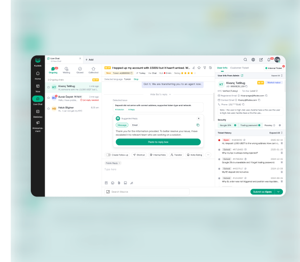

Context split across tabs
BeforeTwo tabs: user info, ticket info


AfterOne column: user, history, ticket
Internal reference · not linked from the site

Every block is opt-in by class, and its styles live in shared files, not in the page. Start a new case from the skeleton below and use only blocks from this page. When a case needs something new, add it to the shared files and to this page first, then use it.
<style> copies of shared blocks; a page prefix (kyb-, aml-) for a block that exists here.<!DOCTYPE html>
<html lang="en">
<head>
<meta charset="UTF-8">
<meta name="viewport" content="width=device-width, initial-scale=1.0">
<title>Project name — Qin Wang</title>
<link href="resources/css/detailpage.css?v=19" rel="stylesheet">
<link href="resources/css/case-pattern.css?v=1" rel="stylesheet">
<link href="resources/css/case-components.css?v=3" rel="stylesheet">
<!-- Page-only styles: just what this case invents (diagrams, prototypes) -->
<script src="site-chrome.js?v=9"></script>
</head>
<body>
<site-header lang-switch></site-header>
<div class="anchor" id="top"></div>
<div class="anchor" id="section1"></div>
<div class="page-title-box case-hero"> … hero (see case-study.mdc) … </div>
<div class="case-layout">
<div class="scrollspy">
<span class="scrollspy__title">Project name</span>
<div class="scrollspy__list">
<a href="#section2" class="list">02 In short</a>
…
<a href="#top" class="list">Back to top</a>
</div>
</div>
<div class="one-col">
<div class="anchor" id="section2"></div>
<span class="cs-kicker">02 · In short</span>
<h3 class="section">Claim heading</h3>
<p>Lead paragraph.</p>
… blocks …
</div>
</div>
<script src="main.js"></script>
<script src="resources/js/case-components.js?v=1"></script>
</body>
</html>One case tells one story. Order sections by the reader's questions: what happened, what I owned, what was wrong, what I changed, what it led to, what I learned.
6–10 sections; a reader who scans only the headings still gets the argument.
Blue is reserved for emphasis: section kickers, After, numbered tags and the current state. Red only means Before or a problem; green only means done.
Hero h2 · 40pxProject nameSection h3 · 26pxClaim headingSection lead · 17pxLead paragraph that repeats the heading's terms.Subsection h5 · 17pxWhere agents got stuckBody · 16px / 1.7Body copy and list items.Card body · 14pxOne sentence per card.Caption · 13pxFigure captions, never below 12px.Micro-label · 11pxKicker · flagCards: 16px apart side by side, 12px stacked. Heading to content 12px; lead to first block 16–24px; sections are separated by the kicker's top rule.
04 · Section rhythmThe kicker names the section; the heading says what changed. The lead repeats the heading's key terms and sets up the block that follows.
With only two weeks, I started with observation rather than screens: 5 agents worked on the live MVP.
One short paragraph, then a block.
Keep body copy short. Use a callout for the one insight a section turns on; fold detail that only some readers want.
4 of 5 agents didn't realise they had to take a ticket before replying.
Agents worked on the live MVP. We pinned every point of confusion to the screen, then grouped them into three structural blockers.
Use cards for 2–4 parallel points, numbered tiles when order matters, and a pill flow when the reader only needs to scan a sequence.
style="--cols:3" for three; .cs-card--num for numbered, .cs-card--soft for a borderless grey grid.Zendesk replaced by the in-house agent workspace.
Take, read and reply in one screen.
Take it in the reply box.
User, history, ticket in one column.
Everyday tools beside the input.
style="--steps:N" for N phases (4–6).Set status to online and join the queue
No friction observed
Take an incoming chat or an unassigned ticket
Didn't know to take the ticket first
Check the user, KYC level and past tickets
Split across tabs
Submit, escalate or close
No friction observed
Metric tiles and bars are for research data or baselines. When there's no data, say why in a note; never estimate.
--bad marks a problem baseline..is-lead marks the one the case acts on.Screens are exported from Figma at 3×. Use a plain shot with a caption, an annotated screen for several notes, and a before/after card for one fix.

The redesigned workspace: ticket, chat and context on one screen.

.db-wt__pill, e.g. "4 of 5 agents") only for observed counts.BeforeTwo tabs: user info, ticket info
AfterOne column: user, history, ticket
The summary opens the case; result panels and reflection cards close it. With no usage data, a one-line note replaces the numbers.
.is-turn on the row the case is about.4 of 5 agents didn't know they had to take a ticket first.
Led 2 designers through three focused fixes in two weeks.
Ready for a 20-agent pilot, then the team was restructured.
p.cs-note if metrics are missing.The team was restructured before the pilot, so there is no usage data.
Assigning work by each designer's strength, such as interaction logic or visual design, avoids costly redesigns later.
Watching real users is the fastest path to clarity.
Full rules are in case-library.mdc.
career-facts.mdc; no unmeasured results.<style> holds only what the case invents.data-zh; checked in EN and 中文 at desktop and phone width.?v= bumped on every changed CSS, JS and image.